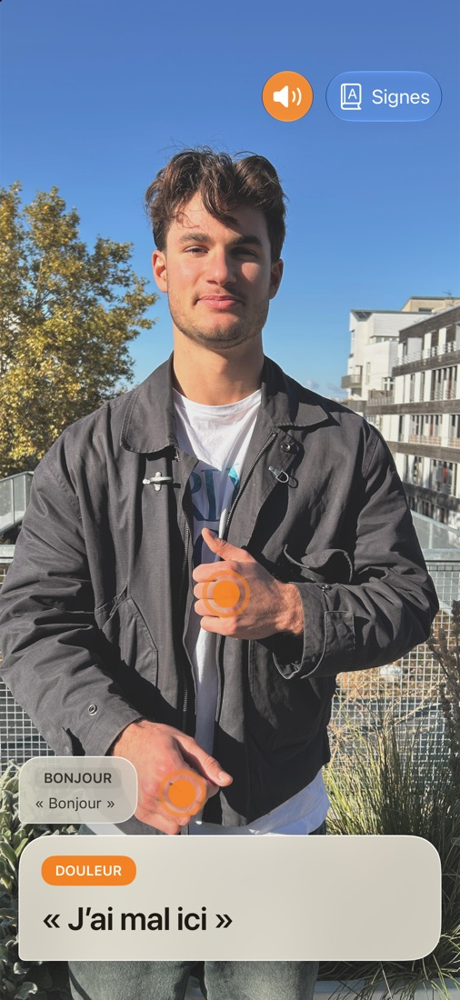

Être compris, même hors ligne.
Dans une urgence, chaque seconde compte. SignBridge aide une personne qui signe à se faire comprendre.



Pointez la caméra
Ouvrez l'app et pointez la caméra vers la personne qui signe.
Elle signe
Mains et haut du corps dans le cadre. Un guide de cadrage l'aide à se placer.
La phrase s'affiche
Elle apparaît à l'écran et peut être lue à voix haute.
Tout reste sur votre appareil.
Toutes les images restent sur votre iPhone ou votre iPad. SignBridge fonctionne sans réseau, même au fond d'une boutique ou en pleine montagne. Sans compte, sans publicité, gratuit.
Un outil, pas un interprète.
Les signes ont été choisis pour les situations où il faut se comprendre vite. SignBridge ne comprend pas la LSF en général, peut se tromper et ne remplace pas un interprète. De nouveaux signes arrivent au fil des versions.
Une question ou une idée de signe ?
Écrivez-nous, nous lisons chaque message. Pour un problème, indiquez le modèle de votre iPhone ou iPad et la version du système.
Écrire à SignBridge